button-before.png
46 · 170 × 84 · ch08-button-before
원본 캡처 20개와 코드 실행 결과로 제작한 이미지 8개. 작은 원본은 확대할 때 선명도에 한계가 있습니다.
46 · 170 × 84 · ch08-button-before
46 · 183 × 82 · ch08-button-after
53 · 497 × 406 · ch08-field-copy
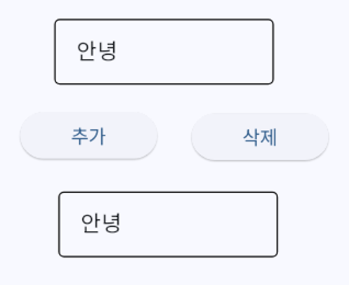
54 · 940 × 286 · ch09-product
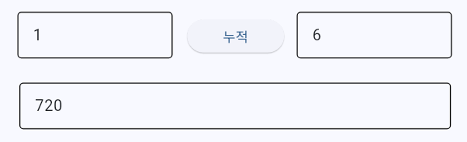
61 · 452 × 215 · ch09-calculator
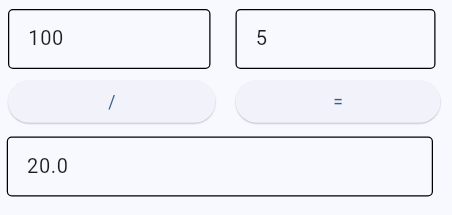
63 · 393 × 234 · ch09-text
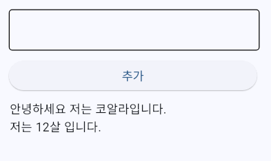
65 · 489 × 257 · ch09-times
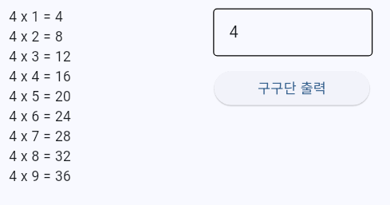
68 · 334 × 304 · ch10-dropdown
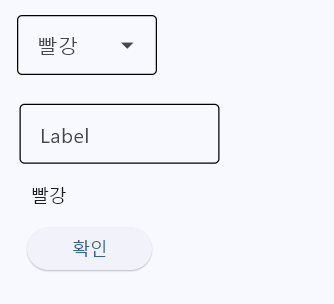
73 · 235 × 323 · ch10-health
78 · 384 × 240 · ch10-club
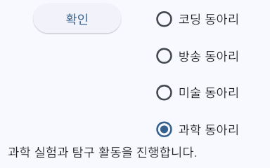
82 · 292 × 125 · ch10-progress
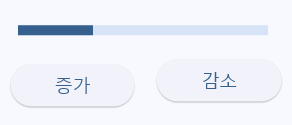
85 · 266 × 232 · ch10-images
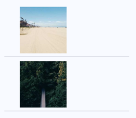
90 · 744 × 381 · ch11-table-screen
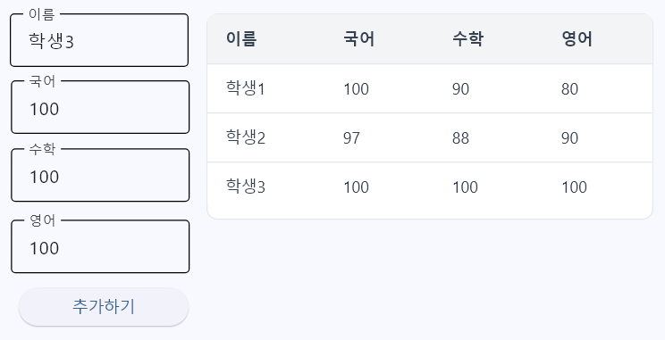
99 · 856 × 467 · ch12-line-screen
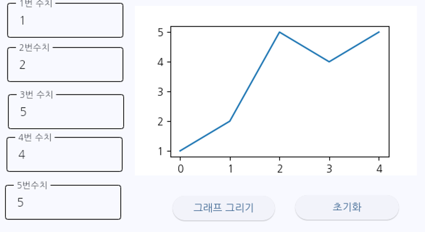
102 · 904 × 464 · ch12-scatter-screen
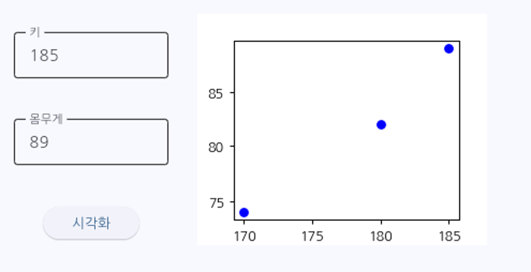
105 · 480 × 545 · ch12-bar-screen
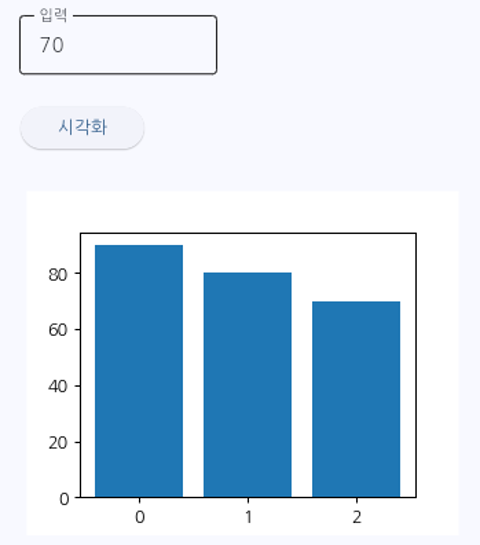
127 · 744 × 1282 · ch12-saved
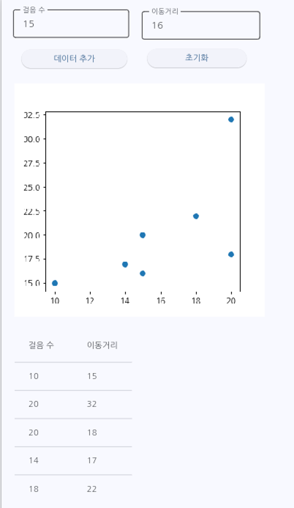
153 · 631 × 309 · ch15-buttons
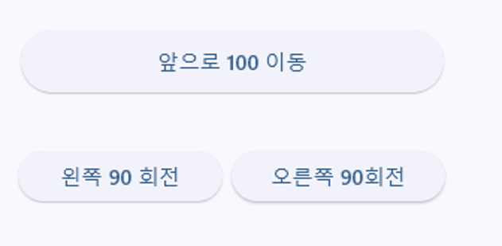
155 · 741 × 652 · ch15-fields
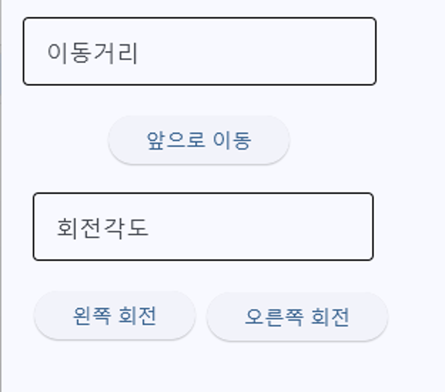
157 · 582 × 514 · ch15-inputs
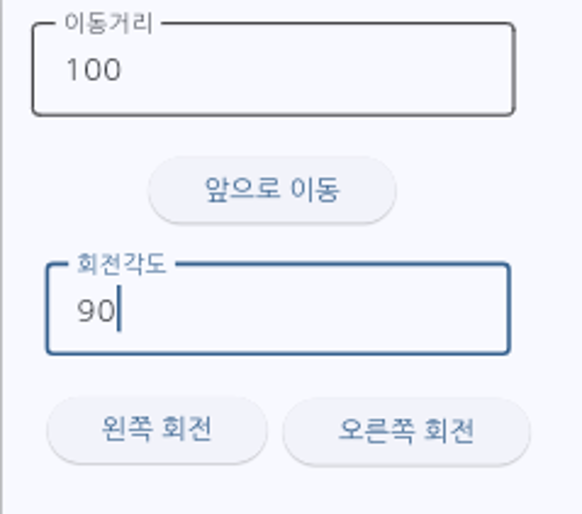
새 실행 결과 · 1920 × 1200 · ch13-one-array
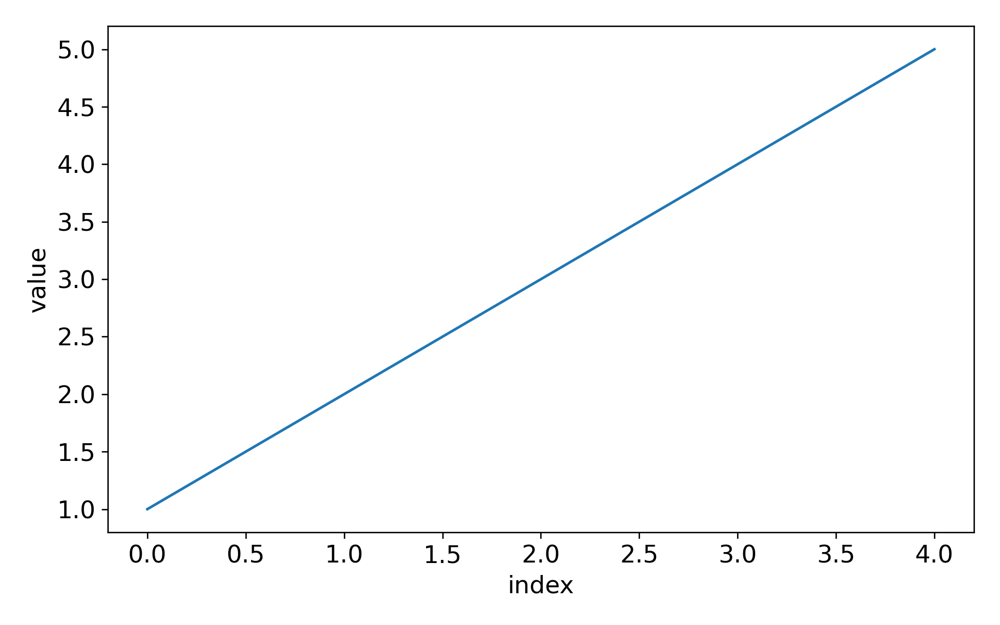
새 실행 결과 · 1920 × 1200 · ch13-two-arrays
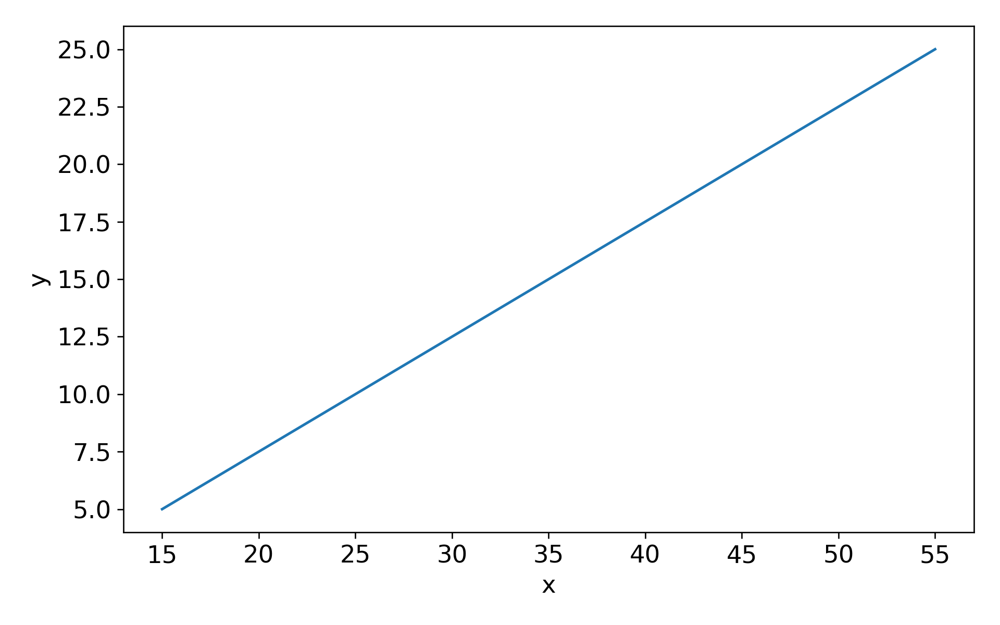
새 실행 결과 · 1920 × 1200 · ch13-range
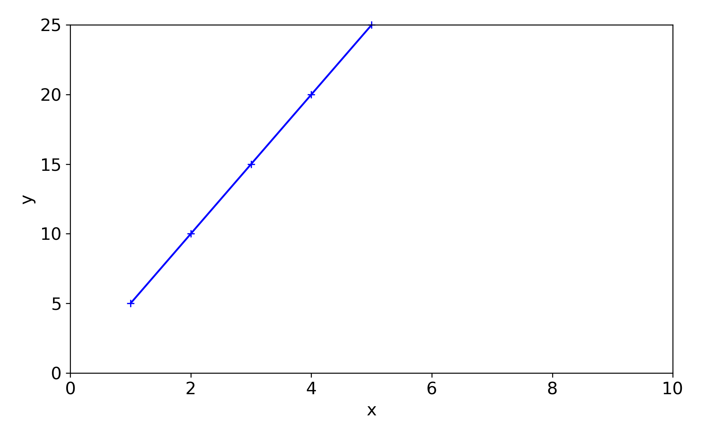
새 실행 결과 · 1920 × 1200 · ch13-markers
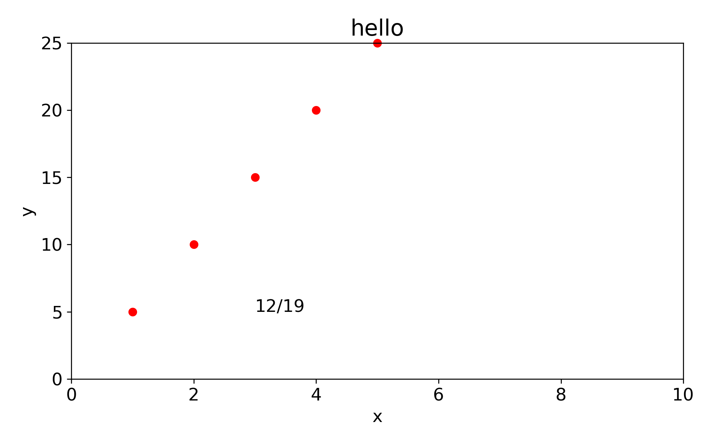
새 실행 결과 · 1920 × 1200 · ch13-bars
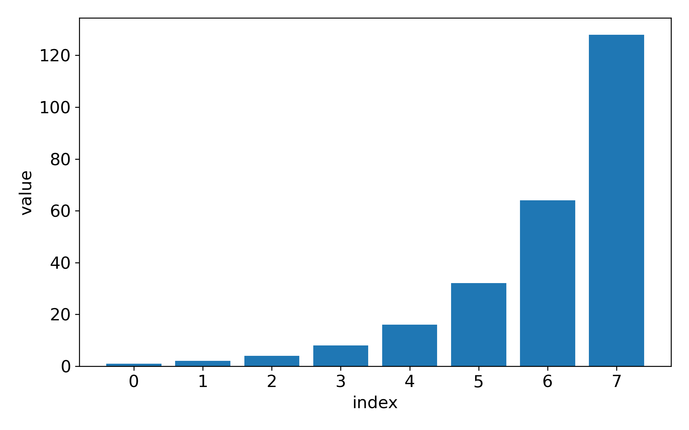
새 실행 결과 · 1920 × 1200 · ch13-grouped
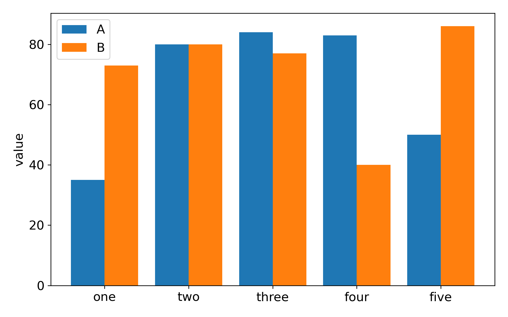
새 실행 결과 · 1920 × 1200 · ch13-scatter
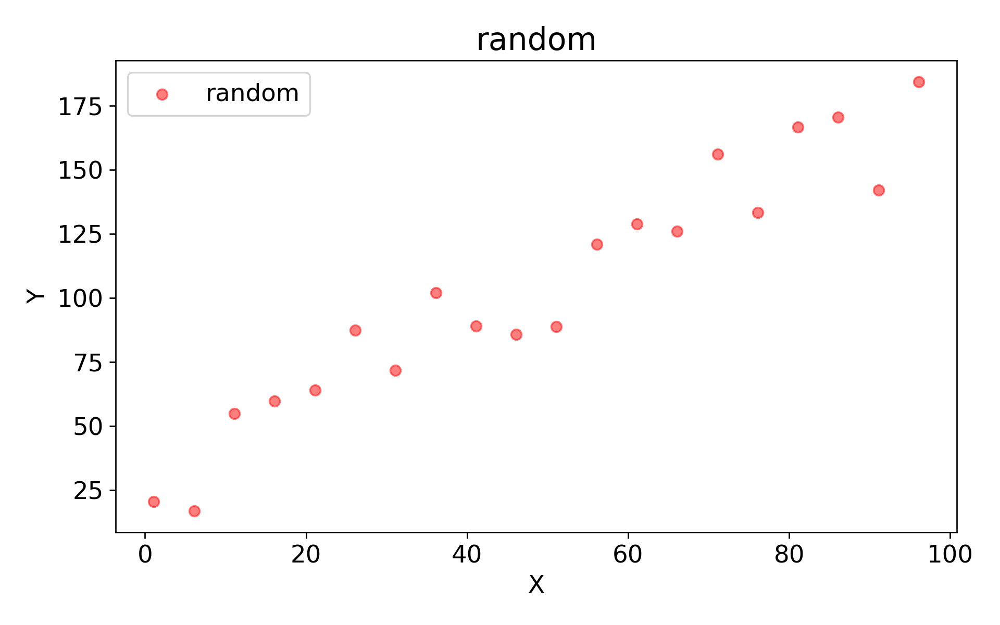
새 실행 결과 · 1920 × 1200 · ch14-table-result
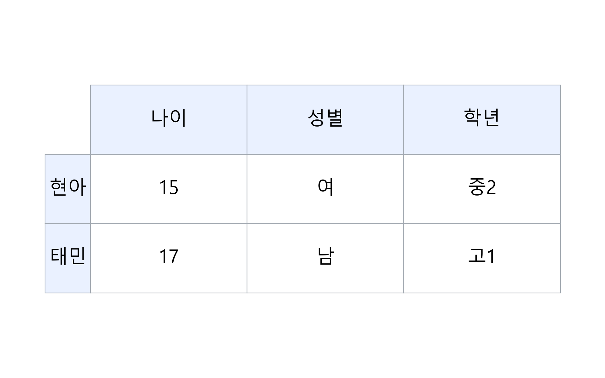